"Tenemos el arte para no perecer a causa de la verdad"
— Friedrich Nietzsche
"La obra de arte suprema es el drama común; solo puede existir en la unión de todas las artes."
— Richard Wagner
El año es 1907 y Berlín es la ciudad que crece más deprisa de Europa. La llaman Elektropolis: sus fábricas no duermen, sus tranvías eléctricos cosen los barrios como agujas incansables, y el U-Bahn —apenas cinco años más joven que el Metro parisino, como sus ingenieros repiten con una sonrisa apretada— serpentea ya bajo Kreuzberg y Charlottenburg. En Unter den Linden los oficiales de la Guardia pasean uniformes impecables; en la Potsdamer Platz los automóviles disputan el paso a los ómnibus de dos pisos; y en el flamante Hotel Adlon, inaugurado hace unas semanas junto a la Puerta de Brandeburgo, media Europa coronada viene a comprobar que Berlín, por fin, sabe también ser lujosa.
Pero quien haya leído el dossier de París debe olvidar aquí la mitad de lo aprendido. En Francia los Maestros del Arte gobiernan desde la penumbra, detrás de una república de fachada. En Alemania nadie se molesta en esconder el poder: el trono lo exhibe. El Káiser Guillermo II se proclama protector de todas las artes del Imperio, encarga monumentos por avenidas enteras, dicta desde el gusto en pintura hasta el largo de las óperas, y mantiene a los gremios artísticos sujetos con la misma correa con que sujeta a sus generales. El arte alemán desfila; y como todo lo que desfila, sueña con romper filas.
Porque bajo el orden guillermino, Berlín hierve. Los pintores de la Secesión exponen a espaldas de la Academia lo que la Academia jamás colgaría. Los arquitectos e ingenieros del recién fundado Werkbund han sellado una alianza inaudita con la industria, y sus fábricas contienen naves cuyo interior no siempre coincide con su exterior. En los sótanos de la Friedrichstraße, un fabricante de aparatos ópticos enseña a las imágenes a moverse — y, dicen algunos, a hablar. Y en Dresde, unos jóvenes que se hacen llamar El Puente pintan con colores que no figuran en ningún catálogo, puentes hacia lugares que no figuran en ningún mapa.
Mientras tanto, el mundo se ha vuelto pólvora. Rusia marcha, España arde, Italia y Grecia despiertan a sus dioses de mármol. Este mismo otoño, las columnas austríacas que marcharon sobre Alemania volvieron a casa bajo la lluvia, rechazadas antes de dar su medida: la versión oficial habla del genio logístico del Gran Estado Mayor, de cañones que llegaron a tiempo por ferrocarriles que nadie recordaba haber tendido. En los salones se elogia la eficiencia prusiana. En los talleres de los Maestros Arquitectos, se guarda silencio y se sonríe.
Y hay una herida que Berlín no olvida: la noche del 5 de noviembre de 1905, en un París lleno de coronas por el baile del heredero de Mónaco, los autodenominados «magnicidas» hirieron al Kronprinz Guillermo, heredero de Prusia y del Imperio. El príncipe sobrevivió; su paciencia con Francia, no. Entre Tánger, Algeciras y aquella sangre derramada en suelo francés, la diplomacia entre las dos capitales del arte europeo es un duelo de esgrima con los floretes sin botón.
El equivalente berlinés del Consejo de las Bellas Artes parisino es el Senado de las Artes, órgano rector de la Real Academia Prusiana de las Artes. La Academia fue fundada en 1696 —un siglo antes que el Consejo de París, y no se cansa de recordarlo— y tiene su sede en un palacio de la Pariser Platz, a un paso de la Puerta de Brandeburgo: los berlineses encuentran muy divertido que el poder artístico alemán despache, precisamente, en la «plaza de París».
El Senado cuenta con catorce asientos, repartidos entre los gremios por patente imperial. Cuatro gremios disponen de tres asientos cada uno —un asiento decisor, cuyo voto vincula al gremio en los asuntos de la Academia, y dos asientos consultivos—: los Pintores, los Músicos, los Escultores y, desde hace pocos años, los Arquitectos, cuyo ascenso de la mano de la industria es el gran acontecimiento del arte oficial de la década. El gremio castigado es aquí el de los Escritores, reducido a dos asientos consultivos: la pluma es el único arte que el trono no ha conseguido poner del todo en formación, y se le hace pagar caro.
Pero que nadie se llame a engaño con las cifras: la diferencia esencial con París no está en la aritmética, sino en lo que se vota. En Francia, el Consejo gobierna al Estado; en Berlín, el Senado no tiene poder político real. Reparte medallas, encargos, cátedras y pensiones — administra carreras, no naciones. El Káiser ostenta el título de Protector de la Academia, y el título dice la verdad entera: el Senado es un instrumento de la corona, no su rival ni su sombra. Un asiento decisor berlinés decide quién esculpirá el próximo monumento; jamás decide si habrá guerra, impuesto o tratado. El Maestro que quiera pesar en los asuntos del Imperio no lo intenta desde la Pariser Platz: busca un salón de la Tiergartenstraße, un padrino con partícula nobiliaria o un contrato con el Gran Estado Mayor. Los senadores lo saben mejor que nadie — por eso los más ambiciosos tratan su asiento como lo que es: una tribuna, no un trono.
El Senado se reúne una vez al mes en la Pariser Platz, bajo la apariencia inofensiva de sesiones académicas: lecturas, concesión de medallas, informes sobre pensionados en Roma. La doctrina oficial que enmarca sus trabajos sigue siendo el discurso pronunciado por el Káiser en 1901 ante la Siegesallee terminada: el arte debe elevar, no descender a la alcantarilla; los ideales eternos no se discuten, se ejecutan. Cada senador aplaudió aquel discurso. Casi ninguno lo cumple sin reservas.
Dos oficinas dependen del Senado y le dan sus dientes: la Comisión de Encargos, que reparte los monumentos, óperas y edificios oficiales del Imperio —y con ellos, las carreras—, y la Oficina de Lectura, un gabinete de censura que revisa libretos, dramas y novelas antes de su estreno o impresión. Los Escritores sostienen que la Oficina de Lectura es la verdadera razón de sus dos míseros asientos: es difícil votar con soltura cuando el censor se sienta enfrente.
Lo que el Louvre es para París, la Isla de los Museos lo es para Berlín — con la diferencia de que aún está creciendo. Entre el Altes Museum y el flamante Museo Kaiser Friedrich, dirigido por el infatigable Wilhelm von Bode, se acumulan a velocidad industrial los tesoros que las expediciones alemanas traen de Pérgamo, Babilonia y Egipto. Los Maestros más viejos observan esa acumulación con inquietud profesional: cada friso antiguo es una obra maestra de alguien, y nadie ha preguntado a sus autores si consentían el traslado. De noche, aseguran los vigilantes, el ala del altar de Pérgamo conviene rodearla, no cruzarla.
Puesto que el Senado no gobierna, la verdadera pirámide berlinesa no se mide en asientos: se mide en distancia a la nobleza. Arriba están los artistas afines a la corte y a las viejas familias: los escultores de monumentos dinásticos, los pintores de historia y de retratos de la Guardia, los músicos de la Ópera Real — Maestros con condecoraciones, encargos y padrinos con partícula. Abajo, y enfrente, crecen los movimientos disconformes, que tienen su corazón en la palabra impresa: los naturalistas que siguen a Hauptmann, los satíricos del Simplicissimus, los jóvenes que corean a Heinrich Mann — escritores en cabeza, arrastrando tras de sí a secesionistas, cabaretistas y grabadores. Ese es el eje político real del arte alemán: no Academia contra Secesión, sino los salones contra las redacciones; los artistas de la nobleza contra los artistas de la calle. Entre ambos bandos maniobran los Arquitectos, que cobran de la industria y saludan a todo el mundo, y los Músicos, demasiado sagrados para tomar partido en voz alta.
El Imperio Alemán, proclamado en 1871 en el Salón de los Espejos de Versalles —la humillación escenográfica más perfecta jamás infligida a Francia—, es una federación de reinos y principados bajo hegemonía prusiana. A diferencia de la República Francesa, aquí la fachada y el edificio coinciden: el poder dice llamarse Guillermo, y lo dice en voz muy alta.
A sus cuarenta y ocho años, Guillermo II es el último mecenas absoluto de Europa y, en el fondo de su corazón, un artista frustrado. Pinta marinas que sus almirantes elogian con disciplina, diseña uniformes, corrige bocetos de monumentos ajenos, y sostiene en privado —nadie se atreve a desmentirlo en público— que de haber nacido en otra cuna habría sido el primer Maestro de su generación. No lo es. Y los verdaderos Maestros del Imperio viven de administrar con tacto esa diferencia entre el gusto del Protector y el talento que el Protector no tiene.
Su política artística es su política a secas: grandiosa, impaciente, teatral. Fue él quien plantó en Tánger, en 1905, el desafío a Francia que estuvo a punto de incendiar Europa; fue su diplomacia la que salió de Algeciras con más orgullo que ganancias. Quienes lo han visto de cerca en las ceremonias de la corte aseguran que cree, sinceramente, que el Imperio es su Obra Maestra — y conviene recordar lo que en este mundo significa esa palabra.
El heredero de Prusia y del Imperio tiene veinticinco años, una esposa reciente —la princesa Cecilia de Mecklemburgo— y una cicatriz que no figura en los retratos oficiales. La noche del 5 de noviembre de 1905, a la salida de una cena privada en París —media Europa coronada seguía en la ciudad tras el baile del heredero de Mónaco—, fue tiroteado por los autodenominados «magnicidas», la organización que esa misma noche asesinó al rey Constantino de Grecia, esposo de una princesa nacida Hohenzollern, y que días más tarde aún golpearía a la familia real portuguesa. Su credo declarado: acabar con los poderes de ciertas élites — las del rango y las del arte. El Kronprinz sobrevivió; el rey, no. Berlín guardó entonces una reserva diplomática impecable, y el príncipe, ya fuera de peligro, agradeció por escrito a los médicos parisinos. La cortesía terminó ahí. Desde entonces, el joven Guillermo cultiva a su alrededor un círculo de oficiales e ingenieros fascinados por lo que llaman, con deliberada vaguedad, «el arte aplicado» — y una convicción nada vaga: que Francia, incapaz de proteger a sus huéspedes o cómplice de sus verdugos, tendrá que responder algún día por aquella noche.
El canciller Bernhard von Bülow, cortesano de guante fino, gobierna administrando el humor imperial más que el Imperio. El Reichstag se elige por sufragio universal masculino —las alemanas no votan, y la prensa conservadora berlinesa cita el sufragio femenino francés como prueba definitiva de la decadencia vecina—, pero sus poderes son escasos: el gobierno responde ante el Káiser, no ante la cámara. Baviera, Sajonia y Wurtemberg conservan sus reyes, sus óperas y sus academias propias; Múnich y Dresde disputan a Berlín la capitalidad artística del Imperio con una tenacidad que el Senado de las Artes explota o padece según el trimestre.
El verdadero clero del Imperio viste de gris. El Gran Estado Mayor, dirigido desde 1906 por Moltke el Joven, pasa por ser la máquina de pensar más perfecta de Europa, y este otoño ha exhibido su obra: la marcha austríaca sobre Alemania, deshecha a las puertas de la doble monarquía sin apenas batalla, mediante una movilización cuya velocidad los agregados militares extranjeros siguen sin poder explicar en sus informes. La versión oficial habla de horarios, de vagones, de disciplina. Los Maestros Arquitectos no dicen nada, que es su manera de decirlo casi todo. Y en los polígonos de Krupp, en Essen, se prueban aceros cuyo temple —murmuran los artesanos viejos— ya no es cosa únicamente de metalurgia.
Si París es una fiesta, Berlín es una fábrica que ha descubierto el champán. La ciudad ha triplicado su población en una generación; el dinero de la Gründerzeit es nuevo, ruidoso y quiere columnas dóricas en el vestíbulo. Todo llega aquí un poco después que a París y con un motor más grande: los grandes almacenes, el cinematógrafo, la luz eléctrica por distritos enteros. Los berlineses compensan la falta de siglos con una ironía seca —el Berliner Schnauze— que no perdona ni al Káiser: a la Siegesallee, su avenida de mármoles dinásticos, la ciudad entera la llama «la avenida de los muñecos».
El uniforme es el traje nacional. Un teniente de la Guardia entra antes que un banquero en cualquier salón, y el propio Káiser posee centenares de uniformes y cambia varias veces al día. La moda civil copia a Londres en el corte y a París en todo lo que jura no copiar. Entre las mujeres de los círculos secesionistas hace furor el Reformkleid, el vestido sin corsé que los médicos recomiendan y los conservadores denuncian; llevarlo a un estreno equivale a una declaración política, y más de una Maestra lo sabe y lo aprovecha.
La bohemia berlinesa tiene su parlamento en el Café des Westens, en el Kurfürstendamm, al que todo Berlín llama Café Größenwahn — «Café Megalomanía». Allí conspiran secesionistas, poetas del Círculo de George, críticos venenosos y jóvenes llegados de Dresde con carpetas llenas de xilografías imposibles. Frente a esa acera ruidosa, los salones de la Tiergartenstraße —el de Cornelie Richter, hija de Meyerbeer, el primero entre ellos— hacen la labor fina: en ellos un senador de las Artes puede cruzar unas palabras con un director de la AEG o un coronel del Estado Mayor sin que nadie lo llame conspiración, sino velada.
En el Deutsches Theater, Max Reinhardt está reinventando el arte escénico europeo: luz eléctrica esculpida, multitudes vivas, y unos Kammerspiele —un teatro de cámara inaugurado el año pasado— donde el público jura que la cuarta pared no siempre está donde debería. La Ópera Real de Unter den Linden es territorio de Richard Strauss, cuya Salomé escandalizó Dresde en 1905 y tardó en llegar a Berlín lo que tardó la corte en perder el pulso con la taquilla. Más abajo en la escala del prestigio y más arriba en la del ingenio, el Wintergarten y los cabarets del Überbrettl afilan cada noche coplas que la Oficina de Lectura no llega a tiempo de tachar.
De noche, Elektropolis enseña su doble fondo. Detrás de las fachadas ilustres se apilan los Mietskasernen, los «cuarteles de alquiler» con patios interiores donde el sol entra una hora al día y donde dibuja, incansable, el cronista gráfico Heinrich Zille. En Wedding y en el norte obrero, la socialdemocracia crece a pesar de todos los expedientes; en los patios traseros ensayan orquestas de patio y coros de fábrica cuyo repertorio inquieta a la policía más que cualquier mitin. Y bajo tierra, el U-Bahn: los maquinistas del último turno tienen prohibido, por reglamento interno que nadie firma, detenerse en estaciones que no figuren en el plano.
Berlín cuenta hacia 1907 con unos 2.100.000 habitantes (más del doble si se cuentan los suburbios que la ciudad devora año a año). Sobre esa masa:
Berlín tiene menos Maestros que París, pero una proporción mucho mayor de ellos figura en nóminas del Estado: la Academia, los teatros reales, los museos, el Ejército. El talento libre emigra a Múnich, a Dresde, a Weimar — o a París, para escándalo de las autoridades y alivio de la Oficina de Lectura.
Mientras los Maestros de Roma levantaban mármoles que respiraban, los pueblos germánicos cultivaban artes que los cronistas latinos no supieron clasificar: runas talladas que sujetaban juramentos, cantos de guerra que espesaban la niebla. Tácito anota, con la incomodidad de quien no encuentra la palabra, que en los bosques del norte «los himnos valen por murallas». La derrota de las legiones en Teutoburgo se estudió durante siglos en ambas orillas del Rin — con conclusiones distintas.
La Edad Media alemana pertenece a los canteros. Las Bauhütten, las logias de obra que levantaron las catedrales de Colonia, Bamberg y Estrasburgo, fueron a la vez gremio, escuela y sociedad secreta: sus marcas de cantero eran firmas, credenciales y llaves. De aquellas logias descienden tanto la Masonería continental que hoy prospera en París como las hermandades de constructores que nunca se marcharon de Alemania — y que jamás han reconocido a sus primas francesas la primogenitura.
Hacia 1450, en Maguncia, Johannes Gutenberg completó la obra maestra más silenciosamente devastadora de la historia: la imprenta de tipos móviles. Por primera vez, una obra podía estar en todas partes a la vez — y con ella, su poder. Los Escritores datan de ahí su verdadera fundación como gremio, y sostienen que todo lo demás son notas al pie. Una generación después, Alberto Durero elevó el grabado a la misma dignidad: obras maestras multiplicadas, viajando en carretas hacia todos los mercados de Europa. El norte descubrió antes que nadie que el arte reproducido no es arte diluido; es arte en campaña.
Johann Sebastian Bach, cantor de Leipzig, construyó en música lo que las Bauhütten en piedra: arquitecturas exactas, habitables, que sostienen a quien las recorre. Los Músicos alemanes lo veneran como el fundamento de su primacía espiritual: podrá discutirse qué nación pinta mejor o esculpe mejor; que la música es alemana no se discute en ningún salón entre el Rin y el Vístula.
En una corte diminuta de Turingia, dos poetas hicieron de Alemania —que aún no existía en ningún mapa— una potencia del espíritu. Goethe, Gran Maestro universal, dejó en su Fausto algo más que un drama: una advertencia profesional sobre los contratos que un Maestro no debe firmar jamás, escrita por alguien que, se murmura, sabía exactamente de qué hablaba.
Napoleón deshizo a Prusia en una tarde y desfiló bajo la Puerta de Brandeburgo. Se llevó a París la Cuadriga de la Victoria que corona la puerta — el expolio más simbólico de una campaña entera de expolios, ejecutado con el asesoramiento, dicen los archivos prusianos, del joven Consejo de las Bellas Artes francés. Alemania no ha olvidado la lección: las obras maestras son botín, y quien tiene el poder se lleva las de los demás a casa.
La Cuadriga volvió a Berlín escoltada como una reina, y el romanticismo alemán nació armado. Caspar David Friedrich pintó nieblas ante las que los veteranos juraban oír el mar; los poetas de la liberación comprobaron que un himno coreado por cien mil gargantas hace cosas que ningún tratado de estética explica. De aquellos años data el interés, nunca desmentido y nunca confesado, del ejército prusiano por las artes aplicadas.
Las barricadas de marzo pidieron parlamento y unidad; consiguieron promesas y fusilería. Media generación de artistas y estudiantes tomó el camino del exilio, muchos hacia París — donde sus nietos aún forman una colonia que ambas policías vigilan con idéntico esmero.
Tras aplastar a Francia, Bismarck escenificó la proclamación del Imperio en el Salón de los Espejos de Versalles: un acto de arte político de una crueldad exquisita, celebrado en el corazón simbólico del enemigo. Los Maestros franceses lo consideran, hasta hoy, la mayor ofensa estética de la era moderna; los alemanes, un ajuste de cuentas por 1806. La indemnización francesa financió la fiebre fundacional —la Gründerzeit— que convirtió Berlín en Elektropolis.
Richard Wagner inauguró en una colina de Franconia un teatro construido para una sola obra: el Anillo completo, la Gesamtkunstwerk, la obra de arte total que fundía música, drama, pintura y arquitectura en un solo golpe de poder. Los que asistieron no se ponen de acuerdo en qué vieron exactamente cuando el Walhalla ardió; sí en que el Festspielhaus quedó, desde entonces, cargado — un lugar anclado donde la música no termina de irse cuando calla la orquesta. Bayreuth es hoy el santuario de los Músicos alemanes y su custodia, un asunto de Estado.
El Gran Maestro murió en Venecia. Su viuda, Cosima, convirtió el duelo en institución: desde entonces gobierna Bayreuth con mano de hierro litúrgico, guardiana de las partituras del maestro como otras casas guardan reliquias — y con razones que las demás casas ignoran.
Guillermo I murió en marzo; su hijo Federico, en junio; y el trono cayó en las manos impacientes de Guillermo II, veintinueve años, un brazo dañado y una necesidad devoradora de grandeza. Europa entera lleva desde entonces ajustándose a su volumen.
Hartos del arte oficial y de sus jurados, Max Liebermann y un grupo de pintores fundaron la Secesión: exposiciones propias, reglas propias, público propio. Fue el cisma más grave del gremio de Pintores en un siglo, y sigue abierto. Ese mismo año, el Káiser vetó personalmente la medalla que el jurado había concedido a Käthe Kollwitz por sus grabados de los tejedores en huelga. Ella siguió grabando. Él no ha olvidado que ella siguió grabando.
Murió en Weimar el filósofo que había escrito que el arte nos protege de perecer por la verdad — y que pasó su última década en un silencio que sus allegados nunca explicaron del todo. Los Maestros lo leen como se lee un informe forense: como la crónica de alguien que miró el mecanismo demasiado de cerca y sin guantes.
El Káiser inauguró su avenida de mármol —treinta y dos grupos escultóricos de Hohenzollern, dirigidos por Reinhold Begas— con el discurso que aún hace de doctrina oficial: el arte que desciende a la miseria y la fealdad es «arte de alcantarilla» y traiciona al pueblo alemán. La Secesión respondió exponiendo exactamente eso. Los berlineses respondieron con un mote para la avenida. Y los centinelas nocturnos del Tiergarten respondieron pidiendo, discretamente, patrullar de dos en dos.
Berlín inauguró su ferrocarril elevado y subterráneo. Las estaciones las firmaron arquitectos de renombre; los túneles, las Bauhütten. El contrato de obra, custodiado en la Pariser Platz, contiene un anexo que ningún archivero enseña.
Un año que los historiadores del futuro subrayarán varias veces. En marzo, el Káiser desembarcó en Tánger y desafió a Francia ante el mundo. En julio, mientras Bohemia anunciaba su separación de la doble monarquía —y Berlín medía con disimulo a la minoría alemana de sus fronteras, tentado de «tomarla bajo su protección»—, el Káiser firmó con el Zar, en la bahía de Björkö, un borrador de alianza que excluía a Francia y que las cancillerías de ambos imperios dejaron morir en un cajón. En Dresde, unos estudiantes de arquitectura fundaron el grupo Die Brücke —«El Puente»— y empezaron a pintar con colores que muerden; en la misma ciudad, la Salomé de Strauss demostró que una ópera puede ser un arma de un solo filo. En Berlín, Max Reinhardt tomó el Deutsches Theater. Y la noche del 5 de noviembre, en un París lleno de coronas por el baile del heredero de Mónaco, los «magnicidas» asesinaron al rey Constantino de Grecia e hirieron al Kronprinz Guillermo: la noche que envenenó el nuevo siglo.
La conferencia sobre Marruecos reunió a las potencias y dejó a Alemania casi sola frente a todas: ni siquiera Viena —agraviada por la pérdida de Bohemia, y cuyo anciano emperador había censurado sin nombrarlo el golpe de Tánger durante su visita a París en 1905— gastó su crédito en defenderla. Una victoria diplomática francesa que Berlín encajó con una sonrisa de esgrimista. El Káiser habló de paz. El Gran Estado Mayor pidió presupuesto. Y entre los dos imperios de lengua alemana, la vieja alianza empezó a oler a papel mojado — como demostraría, dos otoños después, la marcha de Viena.
En octubre, arquitectos, artesanos e industriales fundaron en Múnich el Deutscher Werkbund: la alianza formal del arte con la máquina, un «gremio de gremios» que no pide asiento en el Senado porque sospecha que pronto no le hará falta. Ese mismo mes abrió el Hotel Adlon junto a la Puerta de Brandeburgo. Y en noviembre, la marcha austríaca sobre Alemania —el zarpazo desesperado de una monarquía que se deshace desde la secesión de Bohemia— fue repelida a las puertas de la propia Austria, tan deprisa que los corresponsales llegaron al frente cuando ya no lo había. Viena habla de otra cosa. Berlín, también: en voz baja, y mirando a los talleres.
"Dibujar es omitir."
— Max Liebermann
En París los Pintores reinan; en Berlín, se desangran. El gremio berlinés vive partido en dos desde la Secesión de 1898: de un lado la Academia, dueña del asiento decisor, de los encargos oficiales y del favor imperial; del otro la Secesión, dueña del talento nuevo, del mercado moderno y de la conversación. Diez años de cisma han enseñado a ambos bandos a convivir como conviven los frentes estabilizados: con cortesía, cartografía y francotiradores.
Los pintores alemanes dominan las mismas artes mayores que sus rivales franceses: los lienzos habitables, los retratos vivientes y el poder de conmover. Pero la escuela académica prusiana ha llevado a la perfección una especialidad propia: el cuadro de historia como registro oficial. Las grandes máquinas de Anton von Werner no representan los acontecimientos: los custodian. Su Proclamación del Imperio existe en cuatro versiones, pintadas a lo largo de veinte años, y ninguna coincide con las otras; los archiveros de la Academia sostienen que no es descuido, y que lo que cambia entre versión y versión es exactamente lo que el Imperio necesitaba que cambiara.
Los retratos vivientes prusianos, más rígidos que los parisinos, tienen fama de mejores centinelas: un pasillo de ministerio berlinés es un lugar pésimo para una conversación imprudente. Y en Dresde, los jóvenes de Die Brücke experimentan con el color puro con una violencia que ni los fauvistas: sus xilografías no conmueven — golpean, y alguna ha dejado marca física en más de un espectador.
El asiento decisor pertenece a la Academia en la persona de Anton von Werner, y el Káiser no consentirá otra cosa mientras viva uno de los dos. La Academia es, además, el partido de la nobleza dentro del gremio: sus retratos visten uniforme, sus encargos llevan corona, y sus maestros cenan en las mismas mesas que sus modelos. La Secesión, con Liebermann y Corinth en los asientos consultivos, controla en cambio el mercado, la crítica y a los coleccionistas burgueses y liberales de la ciudad; puede perder todas las votaciones y aun así decidir qué pintura alemana verá Europa. Entre ambos bandos, los marchantes hacen fortunas y los espías, méritos.
La cuestión que desvela al gremio entero es Dresde. Die Brücke no ha pedido ingreso ni en la Academia ni en la Secesión; pintan «puentes», dicen sus manifiestos, hacia una orilla que no nombran. La Academia quiere expedientarlos; la Secesión, ficharlos; la Oficina de Lectura, entender de una vez si una xilografía puede constituir delito de imprenta.
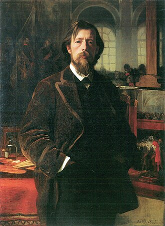
Director de la Academia, pintor de corte y comisario efectivo del arte oficial prusiano, Anton von Werner es, a sus sesenta y cuatro años, el hombre del Káiser en el Senado de las Artes. Estuvo en Versalles en 1871, con veintisiete años, tomando apuntes mientras se proclamaba el Imperio; lleva desde entonces pintando aquel día una y otra vez, por encargo y con variaciones, y quien compare las cuatro versiones con calma hará bien en no comentar en voz alta lo que note.
Von Werner no es un fanático: es algo más eficaz, un profesional absoluto de la lealtad. Desprecia a la Secesión con cortesía perfecta, administra los encargos del Imperio con justicia escrupulosa hacia los suyos, y considera que el arte alemán es un cuerpo del Estado, con su escalafón, su uniforme y su código disciplinario. Los jóvenes lo caricaturizan como un notario del pincel. Los viejos recuerdan que los notarios, en Prusia, dan fe — y que lo que von Werner da por sucedido tiene una inquietante tendencia a haber sucedido.
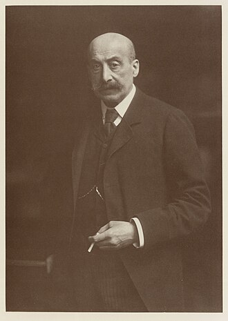
Presidente de la Secesión de Berlín, sesenta años, judío, berlinés hasta la médula y dueño del ingenio más temido de la Pariser Platz, Max Liebermann es el jefe de la oposición pictórica del Imperio. Pinta la vida moderna —jardines, mercados, gente que trabaja— con una libertad que la doctrina oficial llama alcantarilla y el mercado llama genio. Su casa junto a la Puerta de Brandeburgo es la embajada informal de todo lo que en el arte alemán no desfila.
En el Senado ejerce de francotirador parlamentario: vota, pierde, y convierte cada derrota en un aforismo que al día siguiente repite todo Berlín. Von Werner lo considera el adversario más peligroso del Imperio precisamente porque no conspira: le basta con tener razón en público. Los secesionistas jóvenes lo veneran; él los administra con la ternura áspera de quien sabe que la mitad acabará en París y la otra mitad, en la Academia.
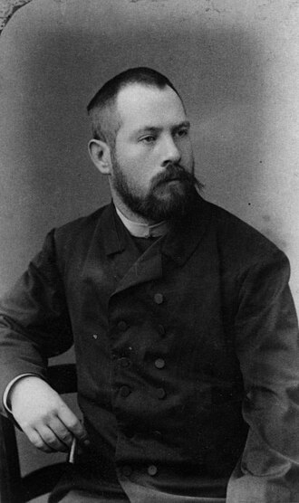
Prusiano oriental de cuarenta y nueve años, formado en Múnich y en París, Lovis Corinth es la fuerza bruta de la Secesión: un pintor de energía casi alarmante, capaz de despachar en una sesión retratos que otros tardarían un mes en fingir. Su pincelada tiene algo carnal y violento que desconcierta por igual a académicos y a esteticistas; sus escenas mitológicas parecen pintadas por alguien que hubiera estado allí y no guardara buen recuerdo.
En el Senado secunda a Liebermann con lealtad ruidosa, aunque ambos discrepan en casi todo salvo en el adversario. Los jóvenes de Dresde lo respetan como a un pariente salvaje. Corinth trabaja como si se le acabara el tiempo, y quienes lo han visto pintar del natural aseguran que, en las mejores sesiones, el estudio entero contiene la respiración con él.
Miembros totales: ~3.500 pintores en Berlín
Artistas: ~2.900 | Maestros del Arte: ~60 | Grandes Maestros: ~7
El cisma duplica las cifras reales del gremio: Academia y Secesión llevan censos separados y ninguno reconoce el del otro. Dresde y Múnich no están incluidas — y en materia de pintura, esa omisión es casi una falsificación.
"Allí donde se queman libros, se acaba quemando también a los hombres."
— Heinrich Heine
Ningún gremio alemán tiene una relación tan amarga con el poder como el de los Escritores. Herederos de Gutenberg —y no se cansan de recordar que la imprenta vale por todas las catedrales—, son también los únicos cuyo arte el trono no consigue poner en formación: un desfile se ordena, una novela no. El Imperio les responde con dos asientos consultivos, una Oficina de Lectura y una paciencia policial infinita. Ellos responden tomando nota. Siempre están tomando nota.
Como sus colegas franceses, los Escritores alemanes dominan la sugestión, la modificación de la memoria y el arte de conmover. Su especialidad nacional es la letra impresa en masa: un panfleto salido de las buenas prensas de Leipzig no necesita ser leído en voz alta para trabajar una ciudad entera, y la Oficina de Lectura no censura los tirajes por celo burocrático, sino por experiencia. Los folletines por entregas, las revistas satíricas como Simplicissimus y los semanarios de combate son la artillería ligera del gremio; las novelas, su artillería de asedio, lenta y demoledora.
Se rumorea —el gremio ni lo confirma ni lo desmiente, que es su manera de archivar— que los mejores memorialistas berlineses practican la operación inversa a la de sus colegas de París: no borrar recuerdos, sino depositarlos, páginas dormidas en la memoria de lectores que un día, ante una señal convenida, recordarán con precisión absoluta algo que jamás vivieron.
Los Escritores son el corazón de la disidencia artística del Imperio, y su enfrentamiento no es con la censura en abstracto, sino con un bando concreto: los artistas de la nobleza — los pintores de corte de von Werner, el bronce dinástico de Begas, los retratistas de la Guardia y los compositores de himnos de encargo. Esa guerra rara vez se declara y jamás se detiene: se libra a golpes de estreno, de sátira, de medalla concedida o negada, de palco imperial retirado. Y los disconformes no son un partido sino varios movimientos que apenas se soportan entre sí — cosa que sus adversarios de salón, mucho mejor avenidos, explotan con paciencia de cazadores.
La herida fundacional del gremio moderno es el caso de Los tejedores: el drama de Gerhart Hauptmann sobre la revuelta de los telares silesios, que el poder intentó prohibir y el público convirtió en consagración. El Káiser retiró su palco del Deutsches Theater y el gremio pagó el gesto con sus asientos. Desde entonces conviven en él dos estrategias: la de Hauptmann —resistir a la vista de todos, amparado por la gloria— y la de Stefan George, el poeta que ha respondido al Imperio fundando el suyo propio: el Círculo, una orden de jóvenes juramentados que copian sus versos a mano, en una tipografía diseñada por él, y lo llaman, sin ironía perceptible, «el Maestro».
Entre ambos polos, la casa Mann libra su propia guerra civil: Thomas, el hermano que ausculta la decadencia burguesa con pulso de cirujano, y Heinrich, el que ha decidido que el problema no es la burguesía sino el súbdito que lleva dentro. Y sobre todos ellos sobrevuela el publicista Maximilian Harden, que desde su semanario dispara desde hace meses contra el círculo íntimo del trono con una puntería que huele a archivo robado. El gremio jura que Harden trabaja solo. La Oficina de Lectura ha dejado de creerlo.
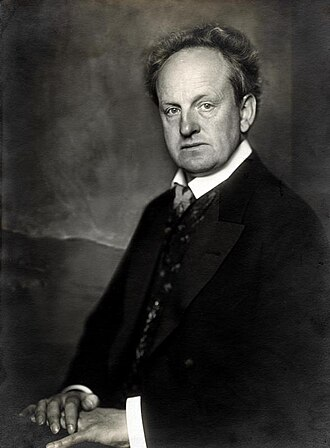
A sus cuarenta y cinco años, el dramaturgo silesio es el escritor más famoso del Imperio y su recordatorio más incómodo. Los tejedores lo consagró como la voz de los de abajo; la corte no se lo ha perdonado, el extranjero se lo premia, y esa tenaza define su vida entera. Con su cabeza de estatua romana y su costumbre de hablar poco y despacio, Hauptmann ejerce en el Senado una autoridad extraña: la del hombre al que castigaron y salió del castigo más grande que sus jueces.
Los naturalistas lo veneran; los esteticistas del Círculo lo tratan de contable de miserias; él sigue escribiendo dramas donde los desvanes y las hilanderías pesan más que los tronos. Cuando estrena, la Oficina de Lectura entera trabaja en domingo. Sus obras sobre los humildes tienen, además, una propiedad que inquieta a los censores más veteranos: el público sale de ellas recordando pobrezas propias que jamás padeció.
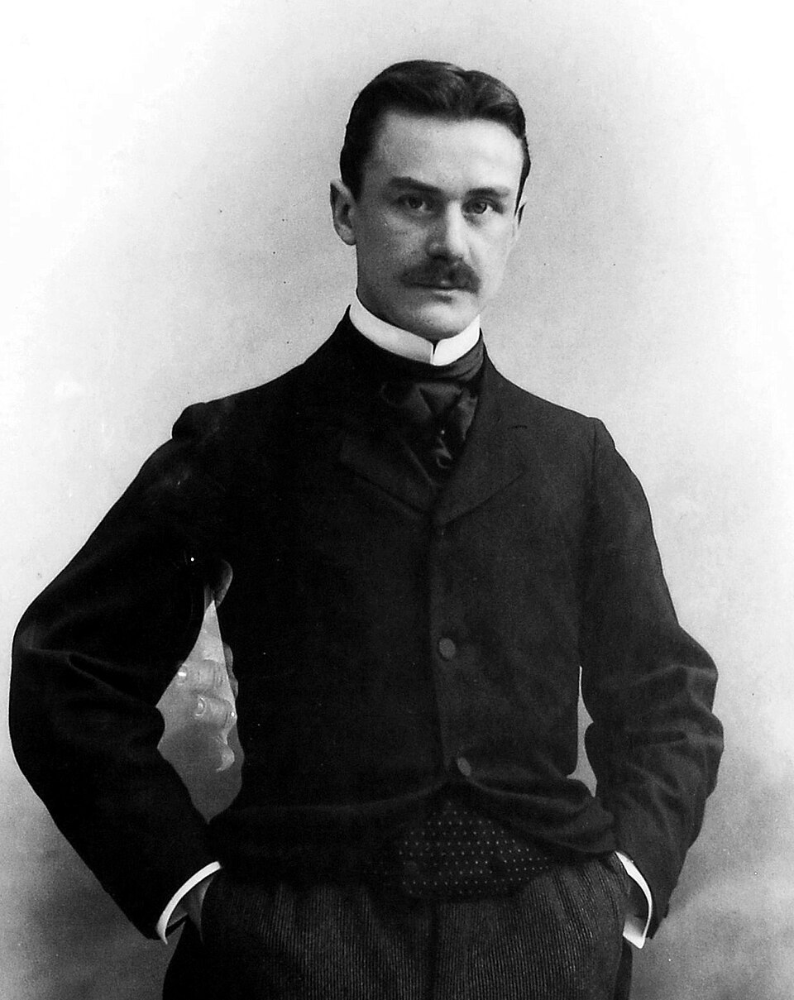
El senador más joven de la Pariser Platz tiene treinta y dos años, un frac impecable y una novela, Los Buddenbrook, que retrató la agonía de una dinastía burguesa con tal exactitud que varias familias de Lübeck siguen sin dirigirle la palabra — y una, dicen, sin conseguir apartarse del destino que el libro le asignó. Vive en Múnich y sube a Berlín para las sesiones, siempre puntual, siempre cortés, siempre tomando notas en unos cuadernos que cierra con llave.
Mann representa en el Senado a la letra respetable: la que no grita, no conspira y resulta, por eso mismo, imposible de censurar. Sostiene en público que el artista alemán debe permanecer al margen de la política; nadie que lo haya visto escuchar una sesión entera sin parpadear cree que el margen sea otra cosa que su puesto de observación. Su duelo soterrado con su hermano Heinrich es la conversación favorita de los cafés literarios — y la única sobre la que ambos hermanos callan.
Miembros totales: ~3.200 escritores en Berlín
Artistas: ~2.900 | Maestros del Arte: ~50 | Grandes Maestros: ~6
Cifras engañosas a la baja: buena parte de los Maestros de la lengua alemana publica desde Múnich, Viena o Zúrich, fuera del alcance de la Oficina de Lectura. El gremio berlinés los cuenta como propios; la policía, también.
"Sin música, la vida sería un error."
— Friedrich Nietzsche
Si la pintura es la reina de París, la música es el emperador secreto de Alemania. De Bach a Beethoven y de Beethoven a Wagner, los alemanes han construido en sonido su verdadera catedral nacional, y el gremio de Músicos administra ese tesoro con una mezcla de orgullo sacerdotal y política de altísimo voltaje. Es el único gremio al que el Káiser trata casi de igual a igual — y el único que posee un territorio soberano propio: la colina de Bayreuth.
Los Músicos alemanes dominan los poderes clásicos de su arte: gobernar los sentimientos de multitudes enteras y anclar música a lugares y objetos. Pero su escuela ha desarrollado dos especialidades temibles. La primera es el coro: Alemania es el país de las sociedades corales, y cien voces adiestradas sosteniendo un mismo estado de ánimo constituyen un instrumento de poder que ningún virtuoso solitario iguala — los coros de fábrica del norte obrero preocupan a la policía política más que cualquier periódico. La segunda es el lugar anclado llevado a escala monumental: el Festspielhaus de Bayreuth es, según los peritos del gremio, el objeto más cargado de Europa, un teatro donde la Gesamtkunstwerk de Wagner sigue sonando, muy baja, cuando el edificio está vacío.
Las bandas militares merecen mención aparte: el Gran Estado Mayor las considera material de guerra y las inspecciona como tal. Una marcha prusiana bien ejecutada no levanta la moral de una columna; la fabrica.
El gremio vive un triángulo de poder perfectamente estable e íntimamente envenenado. En Berlín, Richard Strauss, director de la Ópera Real, encarna la modernidad triunfante: el compositor vivo más célebre del mundo, que escandaliza con una mano y cobra con la otra. En Bayreuth, Cosima Wagner custodia la ortodoxia del maestro muerto y excomulga sin apelación; su pleito con Strauss sobre si Parsifal puede representarse fuera de la colina sagrada es, bajo su apariencia litúrgica, una guerra por el control del objeto más poderoso del gremio. Y en la Filarmónica, el húngaro Arthur Nikisch demuestra cada noche que un director sin cargo cortesano ni dogma puede, batuta en mano, gobernar más almas que ambos.
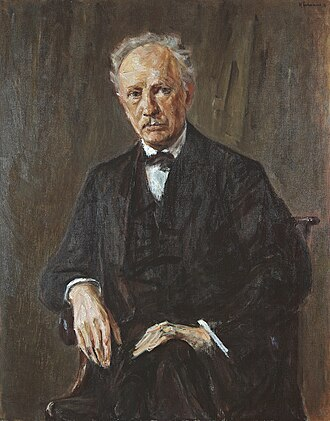
Bávaro de cuarenta y tres años, director de la Ópera Real de Berlín y autor de la Salomé que hizo santiguarse a media Europa y comprar entradas a la otra media, Richard Strauss es el Maestro con mejor cabeza para los negocios de su generación — sus enemigos dicen que en ese orden. Compone poemas sinfónicos capaces de pintar una tormenta hasta el punto de mojar al público de las primeras filas, negocia sus derechos de autor como un canciller y dirige con una economía de gestos que hace más inquietante el resultado.
En el Senado vota con el pragmatismo de quien sabe exactamente cuánto vale: apoya al trono en lo ceremonial, a la modernidad en lo sustancial y a Richard Strauss en todo lo demás. Cosima Wagner lo considera un hereje con talento, que es la peor clase; él le profesa una devoción irreprochable y una paciencia de heredero. El retrato que le pintó Max Liebermann cuelga en su despacho de la Ópera; visitantes de confianza juran que, en los ensayos difíciles, el retrato escucha.
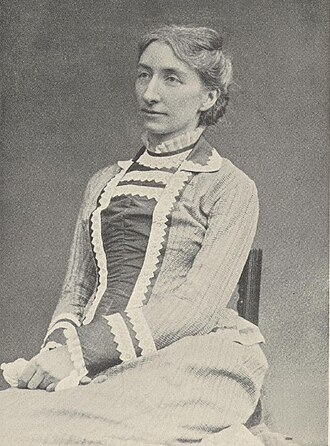
Hija de Franz Liszt, viuda de Richard Wagner y soberana absoluta de Bayreuth, Cosima Wagner tiene setenta años y la autoridad de una institución con memoria. Desde la muerte del maestro gobierna el Festspielhaus como un templo: decide quién dirige, quién canta, qué se representa y —sobre todo— qué no saldrá jamás de la colina. Su negativa a liberar Parsifal no es capricho de albacea: los peritos del gremio sostienen que la obra está anclada al teatro de un modo que nadie se atreve a poner a prueba.
Ocupa su asiento consultivo por correspondencia la mayor parte del año, y cuando viaja a Berlín el Senado entero ajusta su orden del día. Trata al Káiser con la cortesía de una potencia extranjera y a Strauss con la de un sucesor indeseado pero inevitable. Quienes la han visitado en Wahnfried, la villa familiar, cuentan que la casa conserva las partituras del maestro en una sala a la que Cosima entra sola — y de la que, algunas noches de festival, sale conversando.
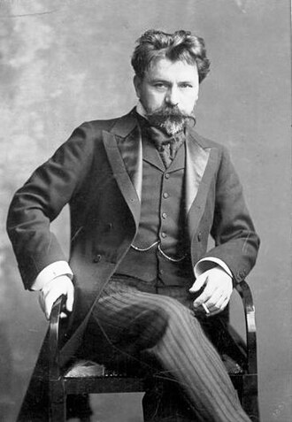
Húngaro de cincuenta y dos años, director de la Filarmónica de Berlín y de la Gewandhaus de Leipzig a la vez —cruza Alemania en tren nocturno como otros cruzan un pasillo—, Arthur Nikisch es el mago reconocido de la dirección orquestal europea. No gesticula: sugiere. Sus músicos aseguran que con la mirada y un milímetro de batuta obtiene lo que otros persiguen a gritos, y que en sus mejores noches la Filarmónica entera respira como un solo animal — expresión que en este gremio conviene no usar a la ligera.
Políticamente es la neutralidad hecha frac: ni corte, ni Bayreuth, ni partido — solo el atril. Precisamente por eso su asiento consultivo vale doble: cuando Strauss y la ortodoxia wagneriana chocan, la posición de Nikisch decide hacia dónde se inclina la opinión musical del Imperio. El Káiser lo condecora, el público lo adora, y él lo agradece todo con la misma sonrisa melancólica de quien sabe que su poder termina, exactamente, donde termina el eco.
Miembros totales: ~4.000 músicos en Berlín
Artistas: ~3.600 | Maestros del Arte: ~70 | Grandes Maestros: ~9
No se cuentan las sociedades corales aficionadas (decenas de miles de voces en todo el Imperio), que el gremio clasifica, con deliberada ambigüedad, como «instrumento» y no como «miembros».
"Vi al ángel en el mármol, y tallé hasta dejarlo libre."
— Miguel Ángel
En París los Escultores ocupan un discreto rango medio; en Berlín son el gremio favorito de la corona. El Imperio compra bronce por toneladas: monumentos ecuestres, fuentes, avenidas dinásticas enteras. La Siegesallee —treinta y dos grupos de mármol repartidos por el Tiergarten— es oficialmente un homenaje a los Hohenzollern y, según la lectura profesional del gremio, otra cosa: una guarnición. Los berlineses, que lo intuyen sin saberlo, la llaman «la avenida de los muñecos» y evitan atravesarla de madrugada.
El poder mayor del gremio es el de sus colegas de todo el mundo: crear gólems, Obras Maestras vivientes de piedra y de metal. La escuela prusiana prefiere el bronce al mármol —resiste mejor el clima y las órdenes— y ha refinado como nadie la escultura pública de propósito doble: el monumento que conmemora de día y monta guardia siempre. Cuántas de las estatuas oficiales de Berlín son gólems durmientes es el secreto mejor guardado del Imperio; la cifra que se murmura en el gremio hace parecer modesto al Louvre.
La escuela nueva, agrupada en torno a August Gaul, ha tomado otro camino: los animales. Sus leones, osos y pingüinos de bronce, de una serenidad engañosa, gustan al público y desconciertan a la doctrina — un centinela con forma de fiera no necesita parecer un soldado. Y desde el norte llega el camino más viejo de todos: la madera, el material gótico, en las manos místicas y toscas de Ernst Barlach, cuyos mendigos y peregrinos tallados parecen a punto de echarse a andar por pura terquedad espiritual.
El gremio es, en apariencia, el más dócil del Senado: vive del encargo público y lo sabe. Su patriarca, Reinhold Begas, ha envejecido en el favor imperial y lo administra con mano cansada; Gaul, secesionista, representa la renovación tolerada — el Káiser detesta la Secesión pero indulta a sus animales. La verdadera cuestión del gremio es sucesoria y nadie la pronuncia: Begas tiene setenta y seis años, y su tercer asiento, el segundo consultivo, está vacante desde 1906, cuando su último ocupante renunció por carta desde Suiza sin dar razones y sin dejar dirección. El Senado ha decidido no cubrirlo «por el momento». El momento dura ya dos años, y en el gremio se considera de pésimo gusto preguntar por qué.
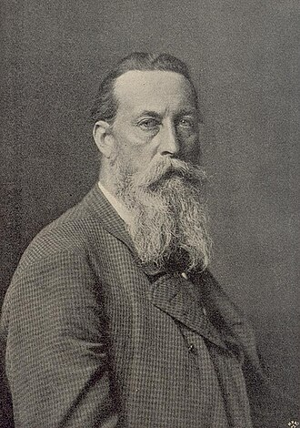
Patriarca del neobarroco berlinés y director artístico de la Siegesallee, Reinhold Begas es, a los setenta y seis años, el escultor del Imperio por antonomasia: suyo es el monumento nacional a Guillermo I, suya la fuente de Neptuno, suyos los encargos que definieron el rostro oficial de Berlín. La crítica moderna lo despedaza con regularidad; el Káiser lo protege con la fidelidad que reserva a lo que considera suyo; y él sobrevive a ambos con la flema de quien lleva medio siglo tratando con bronce y con monarcas, y sabe cuál de los dos materiales es más blando.
En el Senado habla poco y decide tarde, pero su asiento decisor pesa como sus estatuas. Los jóvenes del gremio lo creen acabado. Los veteranos observan que la avenida de los muñecos se terminó bajo su dirección, grupo a grupo, sin un solo accidente reseñado en los archivos — y que en un encargo de esa naturaleza, la ausencia de accidentes es la más inquietante de las credenciales.
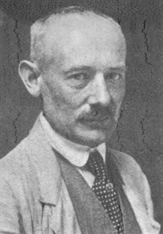
Hijo de cantero, treinta y ocho años, miembro fundador de la Secesión y sin embargo tolerado —casi mimado— por la corte, August Gaul ha conseguido lo imposible en el Berlín guillermino: modernidad sin escándalo. Sus animales de bronce, de una calma monumental, están en parques, bancos y patios de toda Alemania; el público los quiere, los niños los montan, y ninguna doctrina ha encontrado aún el modo de declararlos alcantarilla.
El gremio lo respeta como al mejor ojo de su generación, y la policía del Tiergarten le profesa una gratitud particular: desde que sus leones flanquean ciertos accesos, las rondas nocturnas junto a la Siegesallee se hacen, cosa curiosa, mucho más tranquilas. Gaul no comenta. Alimentar a las palomas junto a uno de sus osos, dicen los guardas, trae buena suerte; molestar a quien las alimenta, ninguna.
Miembros totales: ~1.800 escultores en Berlín
Artistas: ~1.650 | Maestros del Arte: ~35 | Grandes Maestros: ~5
El tercer asiento del gremio permanece vacante desde 1906. El censo tampoco aclara cuántas de las obras públicas de sus Maestros deben contarse, a efectos prácticos, como población.
El gremio en ascenso — herederos de las Bauhütten
"La arquitectura es música congelada."
— Atribuido a Goethe
He aquí la gran inversión respecto a París: lo que allí es un gremio castigado y resentido, aquí es la potencia emergente del arte alemán — no por sus asientos, que en Berlín valen lo que valen, sino por sus clientes: la industria y el Ejército. Los Arquitectos alemanes descienden en línea directa de las Bauhütten medievales —las logias de obra que las cofradías parisinas llaman primas y tratan como rivales— y han encontrado en la industria del Imperio al mecenas que la corona francesa les negó a los suyos: un mecenas con altos hornos. Desde hace pocos años disponen de tres asientos, incluido el decisor. Nadie recuerda una ascensión tan rápida. Nadie ha auditado sus causas con demasiado celo.
Su arte mayor es el de siempre: alterar el espacio. Salas mayores por dentro que por fuera, corredores que descuentan distancias, puertas que dan a donde conviene. La novedad berlinesa es la escala: por primera vez en la historia, estos poderes se aplican a fábricas, estaciones y redes ferroviarias enteras. El atrio de los almacenes Wertheim de Alfred Messel acoge cómodamente a más público del que el edificio, medido por fuera, podría contener — el hecho es notorio, jamás desmentido y atribuido oficialmente al «genio de la planta libre». Los túneles del U-Bahn los excavaron las Bauhütten bajo contrato reservado, y el reglamento nocturno de la compañía prohíbe a sus maquinistas detenerse en estaciones no señaladas en el plano.
La marcha austríaca de este otoño ha consagrado, en los despachos que importan, la especialidad más discreta del gremio: la logística imposible. Cuerpos de ejército enteros llegaron al frente por líneas que los mapas civiles no recogen y los mapas militares recogen desde hace sospechosamente poco. El Gran Estado Mayor firma los partes; los Maestros Arquitectos cobran las minutas; y entre ambos silencios, Austria fue devuelta a casa en tres semanas.
El gremio juega tres manos a la vez. Con la corte, ejecuta el gusto oficial —catedrales neobarrocas, fachadas de mármol— sin discutirlo jamás en voz alta. Con la industria, ha sellado su alianza de futuro: Peter Behrens acaba de ser nombrado consejero artístico de la AEG, el primer Maestro en nómina de una compañía eléctrica, y el recién fundado Werkbund —arquitectos, artesanos e industriales juramentados en Múnich el mes pasado— amenaza con convertirse en un gremio transversal que responda ante nadie. Y con las Bauhütten, mantiene la relación de siempre: los asientos del Senado tratan, las logias disponen, y ningún profano ha visto jamás la frontera entre ambas cosas.
París observa este ascenso con alarma profesional. La Masonería francesa y las Bauhütten alemanas se conocen, se escriben y no se fían: si las dos ramas de los constructores llegaran a entenderse por encima de sus gobiernos, más de una cancillería tendría que redactar planes nuevos. De momento, se limitan a intercambiar delegados en los entierros.
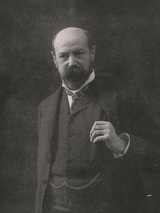
El arquitecto de los almacenes Wertheim tiene cincuenta y cuatro años, la elegancia discreta de un banquero culto y la cartera de encargos más codiciada del Imperio. Su gran fachada de la Leipziger Platz —pilares góticos, vidrio y luz— enseñó a Berlín que un templo del comercio podía ser, sencillamente, un templo; su atrio es la anomalía espacial más visitada de Europa, y la única sobre la que la prensa tiene instrucciones de escribir siempre la palabra «amplitud» y jamás la palabra «tamaño».
Messel preside el asiento decisor con un estilo nuevo en la Pariser Platz: sin doctrina, sin discursos, con planos. La corte lo respeta porque acaba de confiarle el futuro museo de Pérgamo; la industria, porque fue suya la primera lealtad; las Bauhütten, por razones que ni la corte ni la industria conocen. Trabaja demasiado, duerme poco y ha empezado a delegar — sus allegados miran a Behrens; él, cuando se le pregunta por su sucesión, responde que un buen edificio no se termina: se entrega.
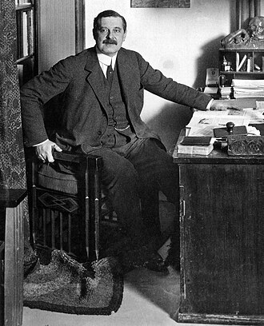
Pintor converso a la arquitectura, treinta y nueve años, recién instalado en Berlín como consejero artístico de la AEG: Peter Behrens es el primer Maestro de la historia contratado por una compañía eléctrica, y el experimento lo mira todo el continente. Su mandato es inaudito: diseñarlo todo — las fábricas, las lámparas, los catálogos, la letra misma con que la compañía escribe su nombre. Behrens lo llama dar forma a la energía. Sus colegas más viejos lo llaman de otras maneras, casi siempre en voz baja.
En el Senado representa la alianza con la industria y el espíritu del Werkbund, del que es fundador. Sostiene, con una seriedad que desarma la burla, que la fábrica es la catedral del siglo que empieza, y que quien dé forma a las turbinas dará forma al tiempo que viene. En su estudio se forman los aprendices más prometedores de Europa; los que salen de él coinciden en dos cosas: que allí se aprende un arte que aún no tiene nombre, y que las turbinas, en los planos del maestro, están dibujadas como si respiraran.
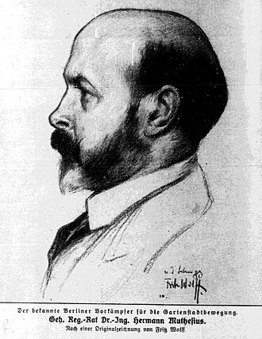
Consejero del gobierno prusiano, cuarenta y seis años, y durante siete agregado técnico en la embajada alemana en Londres — donde estudió la casa inglesa con un detalle que los servicios británicos siguen encontrando, retrospectivamente, admirable y alarmante a partes iguales. De aquella misión volvió con un libro monumental, La casa inglesa, y con la doctrina que ahora predica sin descanso: objetividad, funcionalidad, forma sin retórica. Es el ideólogo del Werkbund y su organizador infatigable.
Muthesius es la clase de poder que no firma edificios: firma programas, planes de estudios, reglamentos de escuelas de artes y oficios — el molde del que saldrán las próximas tres generaciones de constructores alemanes. Sus adversarios en el gremio lo acusan de querer convertir el arte en ingeniería; él responde que la frontera entre ambas es, precisamente, el territorio que Alemania está llamada a colonizar. Cuando se le pregunta por las Bauhütten, elogia con calidez su artesanía histórica y cambia de tema con una suavidad perfectamente ensayada.
Miembros totales: ~1.500 arquitectos en Berlín
Artistas: ~1.400 | Maestros del Arte: ~30 | Grandes Maestros: ~4
Las Bauhütten agrupan además a varios miles de oficiales, canteros y aparejadores que no figuran en censo alguno. El gremio sostiene que son «personal auxiliar». Las logias no sostienen nada: es su costumbre.
Sin asiento en el Senado —la vieja exclusión pesa en Berlín igual que en París—, el teatro alemán vive sin embargo su hora más alta. La razón tiene nombre y apellido: Max Reinhardt, el director que ha convertido el Deutsches Theater en el laboratorio escénico de Europa. Los actores berlineses han dejado de declamar y han empezado a estar; y en los Kammerspiele, su sala de cámara, esa presencia alcanza intensidades que la crítica describe con metáforas y los acomodadores, con peticiones de traslado.
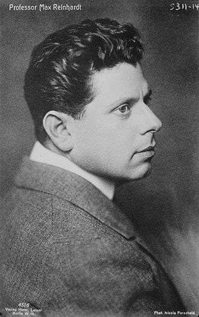
Austríaco de treinta y cuatro años, actor arrepentido y director iluminado, Reinhardt dirige el Deutsches Theater y los Kammerspiele con una idea sencilla y sin fondo: el teatro no debe representar mundos, debe fabricarlos. Esculpe con luz eléctrica, mueve multitudes de figurantes como mareas y ensaya con una minuciosidad que sus actores comparan con el hipnotismo, sin ánimo de exagerar. Su Sueño de una noche de verano instaló un bosque en el escenario; varios espectadores de las primeras filas siguen encontrando resina en los abrigos, y la administración del teatro cambió de proveedor de limpieza antes que de explicación.
Si el cine francés tiene en Méliès a su mago, el alemán tiene en Oskar Messter a su ingeniero — y la diferencia define a ambas naciones. Desde sus talleres de la Friedrichstraße, Messter fabrica las cámaras, imprime las películas, gestiona las salas y ensaya, con su «Biophon», la herejía definitiva: imágenes que hablan. La fotografía berlinesa, mientras tanto, tiene su Atget en Heinrich Zille, el cronista de los patios pobres, cuyo archivo la policía ha intentado comprar dos veces. Las dos veces ha vuelto con las manos vacías y con la sensación, difícil de redactar en un informe, de haber sido fotografiada.
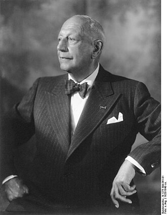
Hijo de un óptico y óptico él mismo, cuarenta y un años, Messter es el cine alemán en una sola persona: inventor de mecanismos, productor, exhibidor y propagandista incansable de su criatura. Su estudio con techo de cristal en la Friedrichstraße produce vistas, actualidades y pequeñas ficciones; su «Biophon» sincroniza la imagen con el gramófono, y en las funciones de prueba el público jura que los cantantes de la pantalla siguen articulando medio segundo después de que se corte el sonido. Messter lo niega con datos técnicos y una sonrisa de relojero. El Ejército, más pragmático, le ha encargado estudios «sobre el valor documental del aparato» — y ha clasificado los resultados.
He aquí otra inversión berlinesa: los artesanos que París traicionó en 1795 son en Alemania la fuerza que sube. El Werkbund los ha sentado a la mesa con arquitectos e industriales; los talleres unidos de Múnich y Dresde, la porcelana de la KPM y la orfebrería renana viven una edad de oro; y sus Reliquias —objetos de uso cargados por décadas de oficio— empiezan a producirse, por primera vez en la historia, en serie corta. La expresión «arte industrial», que en París es un oxímoron de salón, aquí es un programa de gobierno. Y quizá algo más: los contramaestres viejos de la AEG aseguran que ciertas remesas de lámparas salen de fábrica mejores que sus planos, y han dejado de firmar los controles de calidad con su nombre completo.
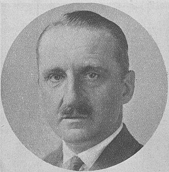
Caricaturista feroz del Simplicissimus reconvertido en el diseñador de muebles más solicitado de Alemania, Bruno Paul dirige desde este año la escuela del Museo de Artes Aplicadas de Berlín — la forja oficial de la nueva artesanía imperial. Tiene treinta y tres años y dos reputaciones que se vigilan mutuamente: la del dibujante que despellejó al Junker y al pastor en mil viñetas, y la del maestro sobrio cuyas sillas, dicen los clientes, enseñan buena postura a quien las usa. Los pedidos de su taller llevan lista de espera de un año; los de ciertos despachos oficiales, prioridad y cláusula de silencio.
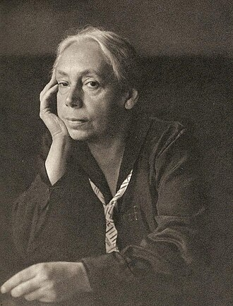
Cuarenta años, grabadora, vecina del norte obrero, donde su marido pasa consulta médica para las cajas de los pobres. Sus ciclos sobre los tejedores y la guerra de los campesinos son el arte más peligroso del Imperio precisamente porque es verdad: el Káiser vetó en persona su medalla en 1898 y con ello la consagró. La Secesión la expone, la policía la archiva y el pueblo del norte la protege sin que ella lo pida. Quien contempla sus planchas el tiempo suficiente empieza a oír los telares; la Oficina de Lectura lo sabe, y por eso sus informes sobre Kollwitz los redactan siempre funcionarios de paso, nunca los mismos dos veces.
Veintisiete años, estudiante de arquitectura desertor y cabecilla de hecho de Die Brücke, el grupo de Dresde que ha declarado la guerra al buen gusto con colores que no figuran en los muestrarios. Kirchner talla, pinta y graba a una velocidad febril, como quien construye un puente por delante de sus propios pies. El manifiesto del grupo, tallado a cuchillo, convoca a «toda la juventud» a la otra orilla — y es notable que jamás precise cuál. La Academia lo quiere expedientar, la Secesión lo quiere fichar, y él quiere, según sus propias palabras, «pintar hasta que el puente aguante». Nadie del grupo acepta explicar qué pasó con el primer estudio que compartieron, el del barrio de los canales, al que ninguno ha vuelto.
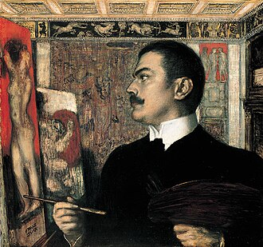
Príncipe de la pintura muniquesa, cuarenta y cuatro años, hijo de molinero ennoblecido por su arte. Su villa de Múnich, diseñada por él hasta el último picaporte, es una obra de arte total en la que el visitante hace bien en no perderse; su cuadro más célebre, El pecado, una serpiente y una sombra que la Pinacoteca exhibe tras cristal por razones que la ficha técnica no detalla. En su aula de la Academia bávara se forman los pintores más inquietantes de la nueva hornada; von Stuck los recibe a todos con la misma prueba: les pide que copien la serpiente. Los que la copian bien reciben caballete; los que preguntan por qué el original parece haberse movido reciben, además, una conversación a puerta cerrada.
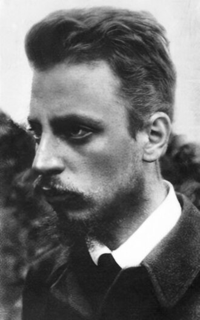
Praguense de treinta y un años, poeta sin domicilio fijo y con correspondencia en cuatro países, Rilke es el gran electrón libre de la lírica alemana — y, desde la secesión de Bohemia, un problema de pasaportes que las cancillerías resuelven no preguntando. Fue secretario de Rodin en París y salió de aquel taller con una poética nueva: el poema-cosa, el verso que no describe un objeto sino que lo sostiene. Los gremios de tres capitales le han ofrecido asiento; los ha declinado todos con la misma cortesía inexplicable. Escribe, viaja y observa — y hay archiveros en Praga, París y Berlín convencidos de que ese itinerario perpetuo dibuja, sobre el mapa, alguna clase de figura.
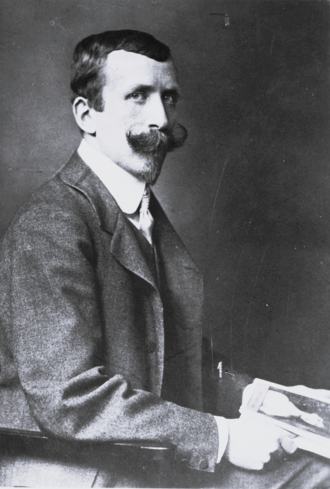
El hermano mayor, treinta y seis años, la pluma más ácida de la casa Mann. Donde Thomas ausculta, Heinrich amputa: su obra en marcha sobre el súbdito —el alemán que se inclina hacia arriba y pisa hacia abajo— circula en fragmentos por los cafés y en resúmenes por los despachos de la Oficina de Lectura. Vive entre Múnich, Italia y Berlín, ama a Francia con escándalo de su hermano y sostiene en público que el Imperio confunde la obediencia con la virtud. Sus sátiras tienen una peculiaridad que la censura ha aprendido a temer: los personajes que inventa tienen la costumbre de aparecer, años después, en las crónicas de tribunales — con otros nombres y las mismas frases.
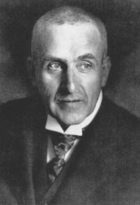
Dramaturgo, cabaretista, actor de sus propios escándalos y expresidiario por delito de lesa majestad — una coplilla en el Simplicissimus le costó meses de fortaleza, que él considera la mejor crítica que ha recibido. Sus dramas, con El despertar de la primavera a la cabeza, dicen en escena lo que el Imperio no tolera ni en susurros, y solo la astucia de Reinhardt ha conseguido estrenarlos en Berlín. En el cabaret canta con una voz rota que hace reír primero y pensar después, que es el orden más subversivo posible. La policía lo tiene por un provocador agotado. Los Maestros del gremio saben que sus canciones se quedan a vivir en la cabeza del público — y que alguna, meses más tarde, todavía toma decisiones.
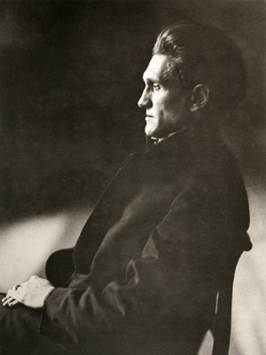
Treinta y nueve años, perfil de camafeo y la convicción serena de que la lengua alemana le pertenece. George no publica: administra. Sus versos circulan en ediciones contadas, compuestos en una tipografía diseñada por él, entre lectores que él aprueba; su Círculo de discípulos —jóvenes brillantes, juramentados, vestidos con una sobriedad que parece uniforme— lo llama «el Maestro» sin que nadie sonría. Desprecia al Imperio, a la prensa y al público por este orden, y predica el advenimiento de una «Alemania secreta» de la que su poesía sería constitución. La Oficina de Lectura no encuentra en sus libros nada punible; los que han dejado el Círculo no encuentran palabras para explicar por qué se fueron, y varios no encuentran tampoco los años que pasaron dentro.
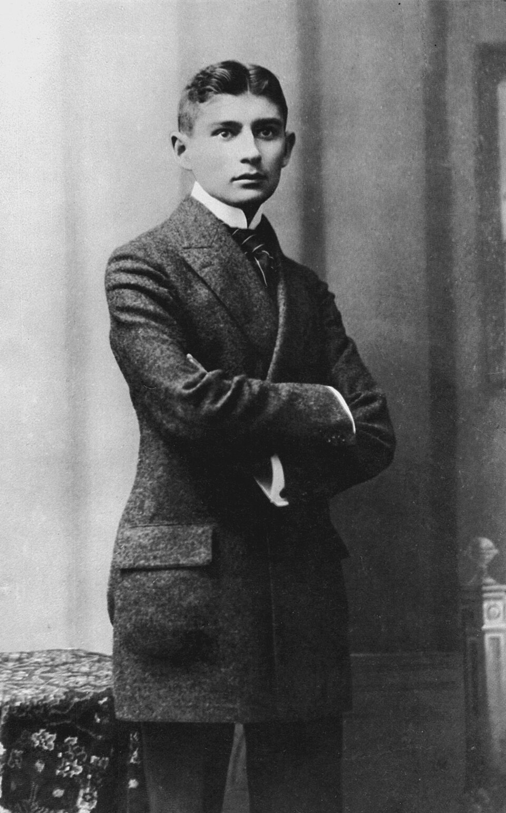
Veinticuatro años, doctor en leyes y funcionario de un instituto de seguros contra accidentes de trabajo de Praga — la isla de lengua alemana que la joven Bohemia conserva, con creciente incomodidad, en el corazón de su capital. De día redacta informes periciales de una precisión ejemplar; de noche escribe una prosa que no se parece a nada: procesos sin acusación, castillos sin puerta, despertares que no devuelven al durmiente a su cuerpo. Publica poco y a regañadientes; su amigo Max Brod reparte los manuscritos por los cafés de tres capitales jurando que ese empleado flaco es el mayor escritor vivo de la lengua alemana, y los disconformes de Berlín, que lo han leído en copias, empiezan a sospechar que el entusiasta se queda corto.
Los movimientos de oposición lo reclaman como suyo; él responde a las cartas con cortesía puntual y no se afilia a nada. Hay, sin embargo, un detalle que su compañía prefiere no ventilar y que las aseguradoras de Viena y Berlín han intentado comprar dos veces: los informes de Kafka describen, con fecha, planta y máquina, accidentes que aún no han ocurrido. La compañía los archiva, ajusta las primas en silencio, y ha trasladado al empleado a un despacho sin ventanas — por su comodidad, según consta en el expediente.
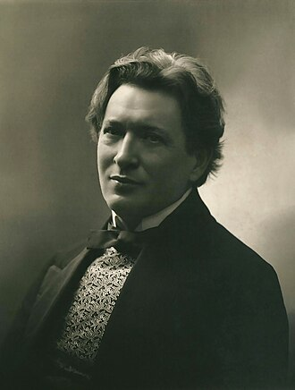
Toscano de Berlín, cuarenta y un años, el pianista más formidable de Europa y su teórico más hereje. Su Esbozo de una nueva estética de la música, publicado este año, sostiene que la música apenas ha nacido: que las escalas son jaulas, que existen terceras de tono esperando oído, y que las máquinas —habla de un extraño instrumento eléctrico americano— cantarán antes de que el siglo cumpla la mayoría de edad. Bayreuth lo considera un blasfemo; Strauss, un competidor tranquilizadoramente poco práctico; sus alumnos, un oráculo. Cuando Busoni transcribe a Bach, dicen los entendidos, no traduce: renueva el contrato — y la catedral invisible del viejo cantor gana, cada vez, una capilla eléctrica.
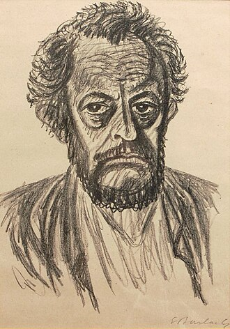
Treinta y siete años y un viaje a Rusia que le cambió las manos: desde que volvió de las estepas, Barlach talla madera como los maestros góticos — mendigos, peregrinos, mujeres al viento, figuras cerradas como puños que parecen contener más peso del que la madera admite. Vive pobre y aparte, entre Berlín y el norte, despreciando por igual el bronce oficial y el mercado moderno. El gremio lo observa con el interés reservado a los caminos abandonados que alguien reabre: la talla devota fue, en tiempos de las catedrales, la escuela de la que salieron los primeros gólems — y las figuras de Barlach, dicen quienes han pasado una noche en su taller, rezan de un modo audible.
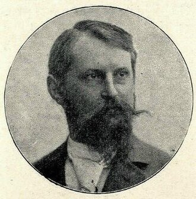
Cuarenta y nueve años, el arquitecto de los monumentos colosales: suyos son los Kyffhäuser y varios de los grandes santuarios patrióticos del Imperio, y suya es la obra que lo consumirá — el Monumento a la Batalla de las Naciones que crece en Leipzig, piedra a piedra, hacia sus noventa metros, para el centenario de 1913. Oficialmente es un memorial. Los aparejadores hablan de criptas cuya numeración no es correlativa, de una cámara de la fama dimensionada «con margen», de guardianes de granito de doce metros esculpidos antes de saber dónde irán. Schmitz dirige la obra desde una caseta sin ventanas y responde a todas las preguntas con la misma frase: que Alemania sabrá para qué lo construyó cuando lo necesite.
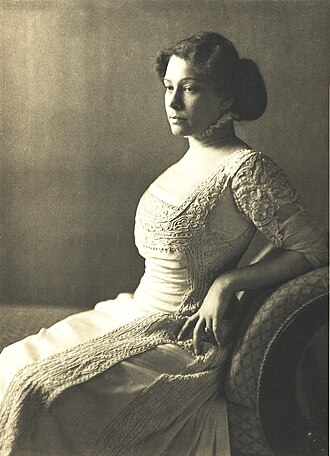
Vienesa de veintisiete años y primera actriz de la compañía de Reinhardt, Durieux posee el rostro más moderno de la escena alemana: anguloso, mutable, imposible de olvidar y difícil de recordar dos veces igual. Los pintores se la disputan como modelo —media Secesión la ha retratado ya— y ella colecciona esos retratos con un cuidado que sus colegas encuentran excesivo y sus retratistas, tarde, comprensible: sostiene, riendo, que quien la pinta se queda con una versión, y que a ella le gusta saber dónde viven todas. En escena hace el resto: sus Salomés y sus Circes dejan al público con la sensación exacta de haber sido vistos, uno por uno, desde el escenario.
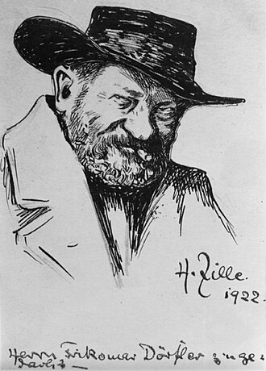
Cuarenta y nueve años, litógrafo de oficio, cronista por vocación del «quinto patio» — el último patio de los Mietskasernen, donde el sol no llega y Berlín guarda lo que no quiere enseñar. Zille dibuja y fotografía a los suyos con una ternura brutal que ninguna doctrina sabe clasificar: humor de taberna sobre miseria de fondo, su famoso «milieu». Su archivo fotográfico, miles de placas de patios, ferias y desmontes, es único — y curiosamente reacio: las dos veces que la policía intentó adquirirlo, los negativos revelaron, en lugar de lo esperado, retratos nítidos de los agentes negociadores. Zille lo atribuye a defectos de la emulsión. Nadie ha intentado una tercera vez.